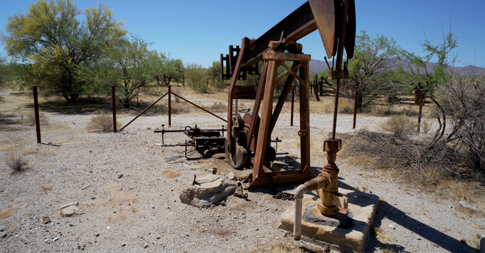

Le Séisme Émirati : Une Rupture Historique avec l'OPEP
La nouvelle a frappé les marchés comme un éclair, laissant les analystes et les partenaires de l'OPEP stupéfaits : les Émirats Arabes Unis (EAU), membre historique du cartel depuis six décennies, ont décidé de quitter l'organisation. Cette décision, d'une portée géopolitique et économique considérable, n'est pas qu'un simple ajustement diplomatique ; elle est le symptôme d'une reconfiguration profonde des dynamiques énergétiques mondiales et des ambitions nationales. Pour l'OPEP, c'est une perte majeure, non seulement en termes de volume de production – les EAU sont un acteur clé avec une capacité de production substantielle – mais aussi en termes de cohésion et de crédibilité. Le cartel, déjà confronté à des défis existentiels liés à la transition énergétique et à la montée en puissance de producteurs non-membres, doit désormais lutter pour maintenir sa pertinence dans un marché pétrolier en mutation rapide.
👉 À lire : L'Envolée de l'Immobilier à Hong Kong : Signal pour l'Or et l'IA ?
L'onde de choc s'est propagée instantanément. Les cours du brut ont réagi avec une volatilité accrue, les traders tentant de décrypter les implications à court et moyen terme. Un analyste de Goldman Sachs, s'exprimant sous couvert d'anonymat, aurait déclaré :
« C'est un coup dur pour l'unité de l'OPEP. Cela soulève des questions fondamentales sur sa capacité à orchestrer la production future. »Mais au-delà des fluctuations immédiates, c'est l'avenir même de la gouvernance pétrolière mondiale qui est en jeu. Les Émirats, avec leur vision audacieuse de diversification économique et leur position stratégique au carrefour du commerce mondial, semblent avoir choisi une voie d'autonomie, préférant dicter leur propre stratégie énergétique plutôt que de se plier aux consensus parfois laborieux du groupe. Cette rupture force à réévaluer les fondements de la stabilité du marché pétrolier et, par extension, l'attrait des actifs refuges comme l'or.
👉 À lire : Marchés de prédiction bloqués au Brésil : Quel impact pour l'or et l'IA ?
Historiquement, l'OPEP a été le régulateur suprême, capable d'ouvrir ou de fermer les vannes pour influencer les prix et stabiliser l'offre. Sa capacité à coordonner des nations aux intérêts parfois divergents a été sa force, mais aussi sa plus grande vulnérabilité. La sortie des EAU met en lumière cette fragilité intrinsèque. Elle pourrait encourager d'autres membres à remettre en question leur allégeance, créant un effet domino qui éroderait davantage l'influence du cartel. Pour les investisseurs dans les métaux précieux, cette incertitude est une donnée cruciale. La volatilité accrue sur le marché pétrolier se traduit souvent par un intérêt renouvelé pour l'or, perçu comme un bouclier contre l'instabilité économique et géopolitique. Comprendre les ramifications de cette décision émiratie est donc essentiel pour quiconque cherche à protéger et à faire fructifier son capital dans un environnement de plus en plus imprévisible.

Les Motifs Profonds : Ambitions Nationales vs. Contraintes du Cartel
Pourquoi une nation aussi influente que les Émirats Arabes Unis choisirait-elle de rompre avec une alliance de longue date qui a façonné en grande partie son destin économique ? La réponse réside dans une convergence de facteurs, principalement ancrés dans les ambitions nationales des EAU et leurs frustrations croissantes vis-à-vis des contraintes imposées par l'OPEP. Les Émirats ont depuis longtemps affiché une stratégie audacieuse de diversification économique, symbolisée par des projets pharaoniques et des investissements massifs dans la technologie, le tourisme, la logistique et les énergies renouvelables. Leur Vision 2030, à l'instar de celle de l'Arabie Saoudite, vise à réduire leur dépendance aux hydrocarbures et à se positionner comme un hub mondial de l'innovation et du commerce. Cette vision exige une flexibilité et une autonomie dans la gestion de leurs ressources pétrolières que l'OPEP, par sa nature même de cartel, ne pouvait plus offrir.
L'un des principaux points de friction a été la question des quotas de production. Les EAU, dotés d'une capacité de production significative et de coûts d'extraction parmi les plus bas au monde, se sont souvent sentis bridés par les plafonds imposés par l'OPEP+. Ils ont des investissements considérables dans l'augmentation de leur capacité, et le fait de ne pas pouvoir exploiter pleinement ces infrastructures pour maximiser leurs revenus et financer leurs projets de diversification a été une source de tension persistante. « Les EAU ont une vision à long terme qui dépasse les fluctuations quotidiennes du baril, » a souligné un économiste basé à Dubaï. « Ils ne pouvaient plus se permettre d'être entravés par des négociations qui ne servaient pas toujours leurs intérêts stratégiques. » Cette quête d'autonomie est également une affirmation de souveraineté dans un monde où les alliances traditionnelles sont remises en question.
La pandémie de COVID-19 a également exacerbé ces tensions. Les coupes de production massives orchestrées par l'OPEP+ pour stabiliser les marchés ont été perçues par certains membres, dont les EAU, comme un fardeau disproportionné. Alors que la demande mondiale reprenait, la lenteur de l'ajustement des quotas a frustré les producteurs désireux de capitaliser sur la remontée des prix. Cette divergence d'intérêts illustre la difficulté croissante pour l'OPEP de maintenir l'unité face à des contextes économiques nationaux de plus en plus divergents. Les EAU ont fait le calcul que les bénéfices de la liberté d'action l'emportaient sur les avantages de l'appartenance à un club dont les règles ne correspondaient plus à leurs ambitions. Cette décision, bien que surprenante par son timing, était en réalité l'aboutissement d'une réflexion stratégique de longue haleine, dont les répercussions se feront sentir bien au-delà des puits de pétrole, influençant potentiellement l'attractivité de l'or comme protection contre les chocs du marché.
L'OPEP à la Croisée des Chemins : Perte d'Influence et Nouveaux Défis
Le départ des Émirats Arabes Unis n'est pas un incident isolé ; il s'inscrit dans une série de défis qui menacent l'hégémonie de l'OPEP, voire sa survie à long terme. Depuis sa création en 1960, le cartel a vu son influence fluctuer, mais rarement de manière aussi structurelle. La montée en puissance de producteurs non-OPEP, notamment les États-Unis avec leur révolution du pétrole de schiste, a considérablement dilué sa part de marché. Des pays comme le Brésil, la Norvège et plus récemment la Guyane émergent également comme des acteurs significatifs, ajoutant à la complexité du paysage énergétique mondial. Cette diversification de l'offre rend la tâche de l'OPEP, celle de stabiliser les prix par la gestion de l'offre, de plus en plus ardue. La sortie d'un membre majeur comme les EAU ne fait qu'accentuer cette érosion d'influence.
La cohésion interne de l'OPEP a toujours été un équilibre précaire entre des intérêts nationaux souvent divergents. Le départ des EAU pourrait servir de précédent dangereux, incitant d'autres membres à évaluer les coûts et les bénéfices de leur propre appartenance. Si d'autres nations décidaient de suivre cette voie, l'OPEP pourrait se retrouver réduite à un noyau de quelques grands producteurs, perdant ainsi sa capacité à influencer véritablement les marchés. « C'est un moment de vérité pour l'OPEP, » a commenté un ancien diplomate saoudien. « Le cartel doit se réinventer ou risquer de devenir une relique du passé. » La question n'est plus de savoir si l'OPEP peut maintenir son influence, mais plutôt comment elle peut s'adapter à un monde où les impératifs de souveraineté énergétique et de transition écologique priment sur les accords de cartel.
Les implications pour le marché pétrolier sont multiples. Une OPEP affaiblie signifie potentiellement une plus grande volatilité des prix, car il y aurait moins de coordination pour absorber les chocs de l'offre ou de la demande. Cela pourrait se traduire par des périodes de surabondance et de prix bas, suivies de pénuries et de flambées, créant un environnement d'incertitude pour les consommateurs et les investisseurs. Dans ce contexte, l'attrait des actifs refuges comme l'or est renforcé. Les investisseurs cherchent des valeurs stables pour protéger leur capital contre les turbulences économiques et géopolitiques. La capacité de l'OPEP à surmonter cette crise de confiance sera déterminante pour l'avenir de l'approvisionnement énergétique mondial et aura des répercussions directes sur la perception du risque et la demande pour les métaux précieux, qui sont souvent les premiers bénéficiaires de l'instabilité des marchés traditionnels.
Volatilité Pétrolière et Répercussions Macroéconomiques Globales
La décision des Émirats Arabes Unis de quitter l'OPEP est une injection directe d'incertitude dans les marchés pétroliers, promettant une volatilité accrue qui se répercutera bien au-delà des plateformes de trading de brut. À court terme, la spéculation sur les volumes de production futurs des EAU – seront-ils augmentés pour maximiser les revenus ou maintenus pour préserver la stabilité ? – maintiendra les prix sous tension. Une augmentation unilatérale de l'offre émiratie pourrait faire chuter les prix, tandis qu'une rétention de la production, même hors OPEP, pourrait les soutenir. Mais c'est la perte de la fonction de stabilisateur de l'OPEP qui est la plus préoccupante pour l'économie mondiale.
Les répercussions macroéconomiques sont profondes. Pour les pays importateurs de pétrole, une volatilité accrue des prix du brut se traduit par une incertitude budgétaire et une pression potentielle sur l'inflation. Des prix élevés du pétrole augmentent les coûts de transport, de production et de consommation d'énergie, pesant sur le pouvoir d'achat des ménages et la rentabilité des entreprises. À l'inverse, une chute drastique des prix, bien que bénéfique à court terme pour les consommateurs, peut déstabiliser les économies des pays producteurs et entraîner des risques déflationnistes, compliquant la tâche des banques centrales. « Nous entrons dans une ère où le prix du pétrole pourrait être moins prévisible, » a averti Christine Lagarde, présidente de la Banque Centrale Européenne, lors d'un récent forum, soulignant les défis pour la politique monétaire.
Cette instabilité a également des implications sur la sécurité énergétique et les chaînes d'approvisionnement mondiales. Les entreprises et les gouvernements devront s'adapter à des scénarios de prix plus imprévisibles, ce qui pourrait accélérer les investissements dans les énergies alternatives, mais aussi créer des goulots d'étranglement ou des ruptures d'approvisionnement en période de tension. Pour les investisseurs, cette nouvelle donne signifie que la diversification du portefeuille est plus cruciale que jamais. Les actifs traditionnellement corrélés au pétrole pourraient voir leurs relations se distendre, tandis que d'autres, comme l'or et les métaux précieux, pourraient briller par leur capacité à offrir un refuge. La compréhension de ces dynamiques complexes et la capacité à réagir rapidement aux changements de marché deviendront des atouts majeurs, soulignant l'importance d'outils d'analyse avancés pour anticiper les mouvements et protéger les investissements.
L'Or comme Refuge : Une Valeur Sûre face à l'Incertitude Géopolitique
Dans un climat d'incertitude géopolitique et de volatilité accrue sur les marchés de l'énergie, l'or réaffirme son rôle historique de valeur refuge par excellence. La décision des Émirats Arabes Unis de quitter l'OPEP, en introduisant un élément d'instabilité majeur sur le marché pétrolier, renforce l'attrait de l'or pour les investisseurs cherchant à protéger leur capital. Lorsque les piliers traditionnels de la stabilité économique sont ébranlés, qu'il s'agisse de la politique énergétique mondiale ou des alliances internationales, l'or tend à briller, agissant comme un bouclier contre les turbulences.
Les chocs sur le marché pétrolier ont souvent des répercussions directes sur la demande d'or. Une hausse soudaine des prix du brut peut alimenter les craintes inflationnistes, poussant les investisseurs vers l'or comme protection contre l'érosion du pouvoir d'achat. Inversement, une chute des prix, signe potentiel de ralentissement économique ou de déflation, peut également stimuler la demande d'or, car il est perçu comme un actif sûr en période de contraction économique. La corrélation entre le pétrole et l'or est complexe et dynamique, mais l'incertitude qu'engendre une rupture comme celle des EAU crée un environnement propice à l'appréciation du métal jaune. « L'or est l'ultime assurance contre l'imprévu, » a déclaré un gestionnaire de fonds spécialisé dans les matières premières. « Et le départ des Émirats est précisément le genre d'événement qui déclenche ce réflexe de sécurité. »
Au-delà des mouvements de prix à court terme, la sortie des EAU de l'OPEP souligne une fragmentation croissante de l'ordre mondial, un facteur qui a toujours été favorable à l'or. La démondialisation, les tensions géopolitiques et la remise en question des alliances multilatérales créent un environnement propice à l'augmentation de la demande pour des actifs tangibles et universellement reconnus comme l'or. Les banques centrales elles-mêmes, conscientes des risques croissants, ont été des acheteurs nets d'or ces dernières années, renforçant sa légitimité comme réserve de valeur. Pour les investisseurs, cela signifie qu'une allocation stratégique à l'or n'est pas seulement une tactique de diversification, mais une nécessité pour naviguer dans un paysage financier et géopolitique de plus en plus volatile. L'intégration de l'or et des métaux précieux dans un portefeuille géré par des outils sophistiqués, comme l'intelligence artificielle, devient une stratégie de plus en plus pertinente pour capter ces mouvements de marché.

Métaux Précieux et Transition Énergétique : Au-delà de l'Or
Si l'or capte souvent l'attention en période d'incertitude, il est crucial de ne pas négliger les autres métaux précieux, dont le rôle est de plus en plus central dans la transition énergétique mondiale. Le départ des Émirats Arabes Unis de l'OPEP, en remodelant le paysage pétrolier, pourrait avoir des effets en cascade sur les stratégies d'investissement dans l'énergie et, par extension, sur la demande pour des métaux comme l'argent, le platine et le palladium. Ces métaux, bien que moins médiatisés que l'or, sont des composants essentiels des technologies vertes et des infrastructures de décarbonation.
L'argent, par exemple, est un conducteur électrique et thermique exceptionnel, indispensable aux panneaux solaires. Une accélération de la transition énergétique, potentiellement stimulée par une volatilité accrue du pétrole et la recherche d'alternatives, pourrait entraîner une demande record pour l'argent. De même, le platine et le palladium, traditionnellement utilisés dans les pots catalytiques automobiles, voient leur rôle évoluer. Le platine est de plus en plus recherché pour les piles à combustible à hydrogène, une technologie clé pour l'avenir des transports et de l'industrie lourde. Le palladium, quant à lui, est crucial pour les batteries de véhicules électriques et l'électronique de pointe. « Ces métaux ne sont pas seulement des actifs refuges ; ils sont les fondations matérielles de notre avenir énergétique, » a affirmé un expert en métaux industriels.
L'incertitude autour de l'OPEP et du prix du pétrole pourrait soit accélérer les investissements dans les énergies renouvelables et les technologies propres, soit, paradoxalement, les freiner si des prix du pétrole durablement bas rendent les alternatives moins compétitives à court terme. Cependant, la tendance de fond vers la décarbonation est irréversible, et les gouvernements, sous la pression climatique, continueront à soutenir ces industries. Cela signifie que la demande pour l'argent, le platine et le palladium est structurellement orientée à la hausse sur le long terme. Les investisseurs avisés doivent donc regarder au-delà de l'or pur et considérer un portefeuille diversifié de métaux précieux. L'analyse de ces marchés, souvent plus complexes et influencés par des facteurs industriels spécifiques, est une tâche idéale pour les algorithmes d'intelligence artificielle, capables de détecter des signaux faibles et d'optimiser les stratégies de trading en fonction des évolutions technologiques et géopolitiques.
L'IA au Cœur de la Stratégie d'Investissement : Anticiper l'Imprévisible
L'environnement actuel, marqué par le départ des Émirats Arabes Unis de l'OPEP et la volatilité qu'il engendre, est le terrain de jeu idéal pour les technologies d'intelligence artificielle (IA) appliquées à l'investissement. Face à des événements imprévus qui peuvent bouleverser des marchés entiers, la rapidité d'analyse et la capacité de réaction deviennent des atouts inestimables. Les agents IA, conçus pour le trading d'or et de métaux précieux, sont particulièrement bien placés pour naviguer dans ces eaux troubles, transformant l'incertitude en opportunités.
Comment l'IA y parvient-elle ? En traitant des volumes massifs de données que l'esprit humain ne pourrait jamais assimiler en temps réel. Nouvelles géopolitiques, rapports économiques, fluctuations des devises, données de production pétrolière, sentiment de marché sur les réseaux sociaux – l'IA peut analyser des millions de points de données simultanément pour identifier des tendances émergentes et des corrélations cachées. Un agent IA peut, par exemple, détecter une augmentation de la demande d'or suite à des rumeurs de tensions au Moyen-Orient, ou anticiper une hausse du platine en réponse à de nouvelles réglementations sur les véhicules électriques, bien avant que ces informations ne soient pleinement intégrées par les acteurs humains du marché. « L'IA ne remplace pas l'intuition, elle l'augmente de manière exponentielle, » a souligné un expert en fintech. « Elle permet de voir les signaux que nous manquons, trop souvent noyés dans le bruit. »
La capacité prédictive de l'IA est cruciale dans des marchés aussi sensibles que ceux des métaux précieux. En modélisant divers scénarios basés sur l'évolution des prix du pétrole, les politiques des banques centrales ou les innovations technologiques, l'IA peut aider à construire des portefeuilles robustes et résilients. Elle excelle dans la gestion des risques, ajustant dynamiquement les positions pour minimiser les pertes potentielles tout en maximisant les gains. Pour les investisseurs intéressés par l'or et les métaux précieux, un agent IA offre une surveillance 24h/24, une exécution rapide des ordres et une discipline émotionnelle qui fait souvent défaut aux traders humains. Dans un monde où les décisions d'un seul pays peuvent avoir des répercussions mondiales, s'appuyer sur une technologie capable d'anticiper et de s'adapter est non seulement un avantage, mais une nécessité stratégique pour protéger et faire croître son patrimoine.
Conclusion : Naviguer dans les Eaux Troubles avec Intelligence
Le départ des Émirats Arabes Unis de l'OPEP marque un tournant historique, non seulement pour le marché pétrolier, mais pour l'ensemble de l'économie mondiale. Cette décision, symptôme d'une quête d'autonomie et d'une fragmentation croissante des blocs géopolitiques, injecte une dose significative d'incertitude et de volatilité dans un paysage déjà complexe. L'OPEP doit se réinventer pour ne pas sombrer dans l'oubli, tandis que les marchés financiers devront s'adapter à une nouvelle ère de prix pétroliers potentiellement moins prévisibles. Les répercussions se feront sentir sur l'inflation, la croissance économique et la sécurité énergétique, impactant chaque portefeuille d'investissement.
Dans ce contexte de mutations profondes, l'or et les métaux précieux réaffirment leur rôle essentiel d'actifs refuges et de piliers de la transition énergétique. L'or, en particulier, continuera d'attirer les capitaux fuyant l'instabilité, tandis que l'argent, le platine et le palladium seront des moteurs indispensables de l'innovation technologique. Comprendre ces dynamiques et savoir comment positionner ses investissements est plus crucial que jamais. Les stratégies d'investissement passives ou réactives ne suffiront plus à protéger et à faire fructifier le capital.
C'est précisément là que l'intelligence artificielle déploie tout son potentiel. Capable d'analyser en temps réel des flux de données colossaux, de déceler les signaux faibles et d'anticiper les mouvements de marché avec une précision inégalée, l'IA offre une solution puissante pour naviguer dans cette nouvelle complexité. Un agent IA dédié au trading des métaux précieux ne se contente pas de suivre les tendances ; il les anticipe, gère les risques et exécute des stratégies optimisées 24h/24. Dans un monde où l'imprévu devient la norme, s'équiper des outils les plus avancés n'est plus un luxe, mais une nécessité pour les investisseurs désireux de transformer l'incertitude en opportunités et de sécuriser leur avenir financier.